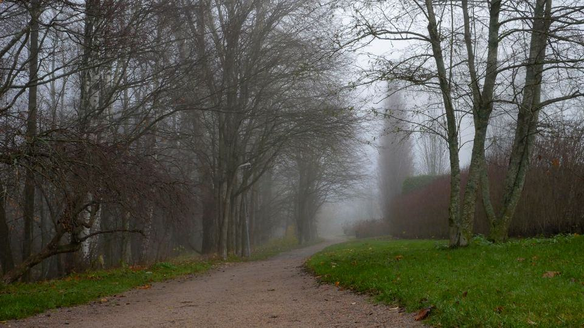
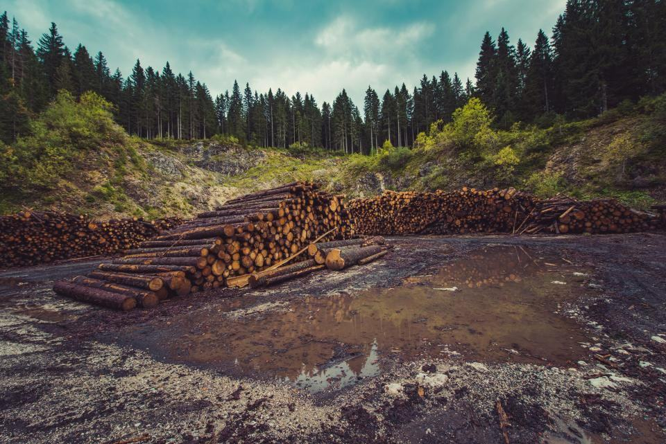

Priser
Vi lämnar alltid fast pris efter en kostnadsfri besiktning.
Diagnos och behandling
Trädhälsodiagnos
Undersökning på plats med skriftligt utlåtande.
3 900 krför det första trädet- Provgropar med luftspade
- Jord- och vävnadsprov vid behov
- Utlåtande inom två veckor
- Avräknas vid behandling
- Vanligast
Rotzonsvård
Luckring och jordförbättring runt ett stort träd.
fr. 11 500 krper träd, före RUT- Luftspade i hela rotzonen
- Biokol, kompost och mykorrhiza
- Lättare beskärning av kronan
- Uppföljning två somrar
Askbedömning
Vilka askar kan sparas och vilka bör fällas?
fr. 4 800 krupp till 20 askar- Bedömning av varje träd
- Band runt stammen på sparade askar
- Karta och lista
- Förslag på fällning eller sparande
Fler priser
| Arborist, per påbörjad timme | 740 kr/tim |
|---|---|
| Luftspade med operatör | 1 350 kr/tim |
| Laboratorieanalys, per prov | fr. 1 600 kr |
| Biokol, per 100 liter | 690 kr |
| Trädskyddsplan vid bygge | fr. 5 500 kr |
| Tillsyn vid schaktning | 850 kr/tim |
| Fällning av sjukt träd upp till 15 m | fr. 6 400 kr |
Exempelpriser inklusive moms, före RUT-avdrag.
Från symptom till behandling
- 1

Bilder och historik
Skicka bilder och berätta vad som har hänt runt trädet de senaste tio åren – byggen, dränering, asfalt.
- 2

Undersökning
Vi undersöker trädet på plats, gräver provgropar med luftspade och tar prover vid behov.
- 3

Utlåtande och plan
Du får diagnos, prognos och en behandlingsplan med fast pris inom två veckor.
- 4

Behandling och uppföljning
Rotzonsvården görs vår eller höst. Vi återkommer varje sommar i två år och fotograferar kronan.
Hur vet man att ett träd är sjukt?
Glesa kronor, små blad, döda toppar, svamp vid stambasen eller sav som rinner från barken är vanliga tecken. Skicka bilder så gör vi en första bedömning.
Vad är en luftspade?
Ett verktyg som blåser bort jord med tryckluft i mycket hög hastighet. Jorden flyttas men rötterna skadas inte, eftersom de är för sega för luftstrålen.
Hjälper biokol verkligen?
Biokol håller vatten och näring och ger plats åt markens mikroliv. Tillsammans med kompost och luckring ger det mätbart bättre rottillväxt.
Kan alla träd räddas?
Nej. Ett träd med långt gången rotröta eller almsjuka går inte att rädda. Då säger vi det direkt och föreslår fällning.
Vilka delar av behandlingen ger RUT?
Arbetet i din trädgård ger RUT, men inte diagnosen, provtagningen eller materialet.
När är rätt tid för behandling?
Vår och höst, när marken är fuktig men inte frusen. Diagnos kan göras under hela växtsäsongen.